Talent and its neglect 37
-
 无题 · Untitled
无题 · Untitled
Li Jianxin 李建新. Renshi (Personnel), 1985 no. 1 (whole no. 1), inside back cover. -
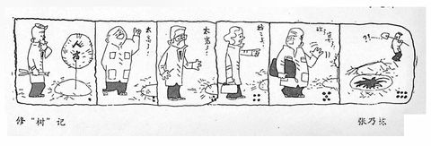
修“树”记 · Pruning the “Tree”
Zhang Naidong 张乃栋. Renshi (Personnel), 1985 no. 1 (whole no. 1), inside back cover. -
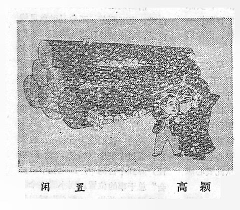
闲置 · Lying Idle
Gao Ying 高颖. Renshi (Personnel), 1985 no. 2 (whole no. 2), p. 46. -
 无题 · Untitled (“Sun Wukong: I want a diploma”)
无题 · Untitled (“Sun Wukong: I want a diploma”)
Zhu Nianci 朱念慈. Renshi (Personnel), 1985 no. 2 (whole no. 2), p. 47. -
 无题 · Untitled (“His sister-in-law's conduct is questionable”)
无题 · Untitled (“His sister-in-law's conduct is questionable”)
Tao Maolin 陶茂林. Renshi (Personnel), 1985 no. 2 (whole no. 2), p. 47. -
 「伯乐」相马 · “Bole” Judges a Horse
「伯乐」相马 · “Bole” Judges a Horse
Wu Dehua 巫德华. Renshi (Personnel), 1985 no. 2 (whole no. 2), p. 47. -
![Untitled (“Recruiting” / “Backlog of talent”) — An old-fashioned bird trap, shown twice. Above, a basket labeled 某单位 (a certain unit) is propped up on a 招聘 (recruiting) sign tied to a pull-string. Nothing comes near it but a fly. Below, a sprung basket labeled 人才积压 (backlog of talent) is packed with trapped birds. Talent that one unit has caught cannot get out again, so nobody walks into the next trap. The right edge of the drawing is cut off in the scan. Unattributed. Renshi (Personnel), 1985 no. 3 (whole no. 3), p. 44.](../../img/renshi-1985-03-s046-04_t.jpg) 无题（招聘／人才积压） · Untitled (“Recruiting” / “Backlog of talent”)
无题（招聘／人才积压） · Untitled (“Recruiting” / “Backlog of talent”)
Unattributed. Renshi (Personnel), 1985 no. 3 (whole no. 3), p. 44. -
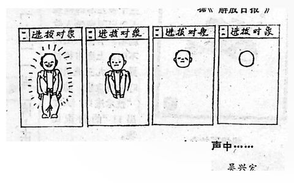
在议论声中…… · Amid All the Talk…
Wu Xinghong 吴兴宏. Renshi (Personnel), 1986 no. 2 (whole no. 5), p. 28. -
 无题 · Untitled
无题 · Untitled
Li Shimin 李时民. Renshi (Personnel), 1986 no. 2 (whole no. 5), p. 39. Reprinted from Guangming ribao (Guangming Daily). -
 有文凭的厨师 · The Chef with a Diploma
有文凭的厨师 · The Chef with a Diploma
Drawn by Sun Yiyu 孙以煜; adapted by Sun Yanfeng 孙岩峰. Renshi (Personnel), 1986 no. 2 (whole no. 5), inside back cover. -
 诸葛亮煽火 · Zhuge Liang Fans the Fire
诸葛亮煽火 · Zhuge Liang Fans the Fire
Unattributed. Renshi (Personnel), 1986 no. 3 (whole no. 6), p. 42. Reprinted from Wenhui yuekan (Wenhui Monthly). -
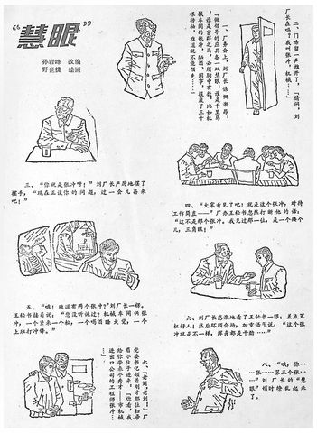
"慧眼" · "A Discerning Eye"
Drawn by Ye Shijie 野世捷; adapted by Sun Yanfeng 孙岩峰. Renshi (Personnel), 1986 no. 3 (whole no. 6), inside back cover. -
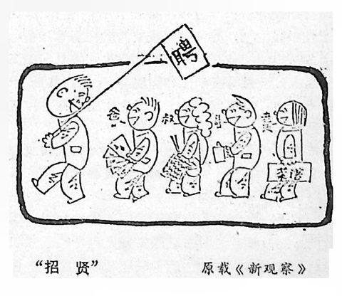
"招贤" · "Recruiting the Worthy"
Unattributed. Renshi (Personnel), 1986 no. 4 (whole no. 7), p. 11. Reprinted from Xin guancha (New Observer). -
 有感无题 · Thoughts Without a Title
有感无题 · Thoughts Without a Title
Quan Xiao 全笑. Renshi (Personnel), 1986 no. 4 (whole no. 7), p. 47. -
 徐悲鸿三请齐白石 · Xu Beihong Invites Qi Baishi Three Times
徐悲鸿三请齐白石 · Xu Beihong Invites Qi Baishi Three Times
Drawn by Zhang Lianrui 张连瑞; adapted by Wei Cheng 魏城. Renshi (Personnel), 1986 no. 5 (whole no. 8), inside front cover. -
 徐悲鸿三请齐白石 (续) · Xu Beihong Invites Qi Baishi Three Times (continued)
徐悲鸿三请齐白石 (续) · Xu Beihong Invites Qi Baishi Three Times (continued)
Drawn by Zhang Lianrui 张连瑞; adapted by Wei Cheng 魏城. Renshi (Personnel), 1986 no. 5 (whole no. 8), inside back cover. -
 能人篇 · On Capable People
能人篇 · On Capable People
Unattributed. Renshi (Personnel), 1986 no. 6 (whole no. 9), p. 44. Reprinted from Fengci yu youmo (Satire and Humor). -
 任弼时任人唯贤 · Ren Bishi Appoints by Merit
任弼时任人唯贤 · Ren Bishi Appoints by Merit
Adapted and drawn by Wu Guoliang 吴国良. Renshi (Personnel), 1986 no. 6 (whole no. 9), inside back cover. -
 灌溉除虫 · Watering and Removing Pests
灌溉除虫 · Watering and Removing Pests
Wang Letian 王乐天. Renshi (Personnel), 1986 no. 7 (whole no. 10), back cover. -
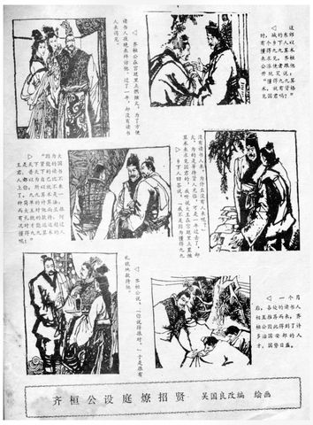
齐桓公设庭燎招贤 · Duke Huan of Qi Lights Torches to Recruit the Worthy
Adapted and drawn by Wu Guoliang 吴国良. Renshi (Personnel), 1986 no. 12 (whole no. 15), inside back cover. -
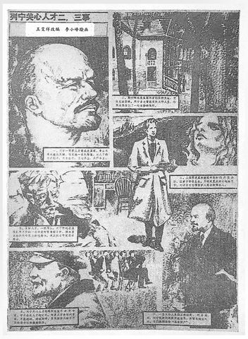
列宁关心人才二、三事 · Two or Three Stories of Lenin's Care for Talent
Drawn by Li Xiaofeng 李小峰; adapted by Wang Bianxiang 王变祥. Renshi (Personnel), 1987 no. 1 (whole no. 16), inside back cover. -
 名人铺路 · A Famous Man Paves the Way
名人铺路 · A Famous Man Paves the Way
Drawn by Li Guozhong 李国忠; text by Wang Bianxiang 王变祥. Renshi (Personnel), 1987 no. 2 (whole no. 17), inside front cover. -
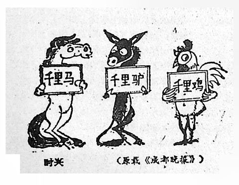
时兴 · All the Rage
Unattributed. Renshi (Personnel), 1987 no. 3 (whole no. 18), p. 46. Reprinted from Chengdu wanbao (Chengdu Evening News). -
 成才之后 · After Becoming Talent
成才之后 · After Becoming Talent
Wen Kexin 温克信. Renshi (Personnel), 1987 no. 5 (whole no. 20), p. 44. -
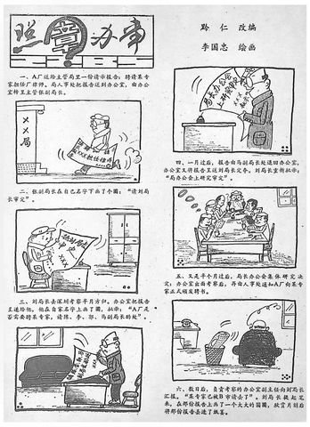
照章办事 · Going by the Rules
Drawn by Li Guozhong 李国忠; adapted by Qian Ren 黔仁. Renshi (Personnel), 1987 no. 5 (whole no. 20), inside back cover. -
 乾隆选才 · Qianlong Chooses Talent
乾隆选才 · Qianlong Chooses Talent
Adapted and drawn by Wu Guoliang 吴国良. Renshi (Personnel), 1987 no. 6 (whole no. 21), inside front cover. -
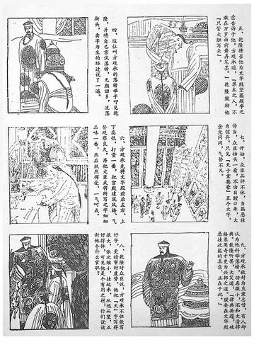
乾隆选才（续） · Qianlong Chooses Talent (continued)
Adapted and drawn by Wu Guoliang 吴国良. Renshi (Personnel), 1987 no. 6 (whole no. 21), inside back cover. -
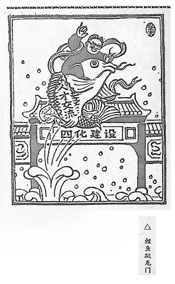
鲤鱼跳龙门 · The Carp Leaps the Dragon Gate
Wang Letian 王乐天. Renshi (Personnel), 1987 no. 7 (whole no. 22), inside back cover. -
 高高挂起 · Hung Up High
高高挂起 · Hung Up High
Wang Letian 王乐天. Renshi (Personnel), 1987 no. 7 (whole no. 22), inside back cover. -
 伯乐相面（献媚者得宠） · Bole Reads Faces (The Flatterer Wins Favour)
伯乐相面（献媚者得宠） · Bole Reads Faces (The Flatterer Wins Favour)
Wang Letian 王乐天. Renshi (Personnel), 1987 no. 7 (whole no. 22), inside back cover. -
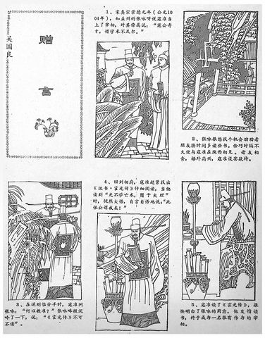
赠言 · Parting Advice
Wu Guoliang 吴国良. Renshi (Personnel), 1987 no. 11 (whole no. 26), inside back cover. -
 天高任鸟飞 · The Sky Is High, Let the Bird Fly
天高任鸟飞 · The Sky Is High, Let the Bird Fly
Wang Xiaogen 王小根. Renshi (Personnel), 1988 no. 1 (whole no. 28), inside back cover. -
 聘请“论敌”授课 · Inviting a “Debating Rival” to Teach
聘请“论敌”授课 · Inviting a “Debating Rival” to Teach
Drawn by Cai Jun 蔡军; text by Wang Bianxiang 王变祥. Renshi (Personnel), 1988 no. 3 (whole no. 30), inside back cover. -
 成吉思汗用“仇”人 · Genghis Khan Employs an “Enemy”
成吉思汗用“仇”人 · Genghis Khan Employs an “Enemy”
Adapted and drawn by Wu Guoliang 吴国良. Renshi (Personnel), 1988 no. 4 (whole no. 31), inside back cover. -
 石门纳贤 · Recruiting a Worthy at Shimen
石门纳贤 · Recruiting a Worthy at Shimen
Adapted and drawn by Wu Guoliang 吴国良. Renshi (Personnel), 1988 no. 8 (whole no. 35), inside back cover. -
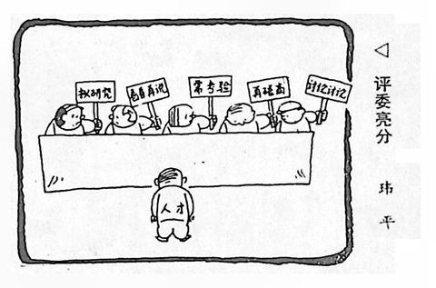
评委亮分 · The Judges Show Their Scores
Wei Ping 玮平. Renshi (Personnel), 1988 no. 12 (whole no. 39), inside back cover. -
 充数 · Making Up the Numbers
充数 · Making Up the Numbers
Wang Chunsheng 王春生. Renshi (Personnel), 1989 no. 9 (whole no. 48), inside back cover.